Compliance Officer
"I don't fully understand how to improve the Average Security score. The UI doesn't provide clear guidance on how to enhance these metrics."
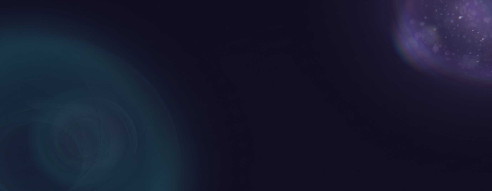
I redesigned the Admin Portal — building a connected system of dashboards, data tables, and navigation that made the organizational security legible for the first time.
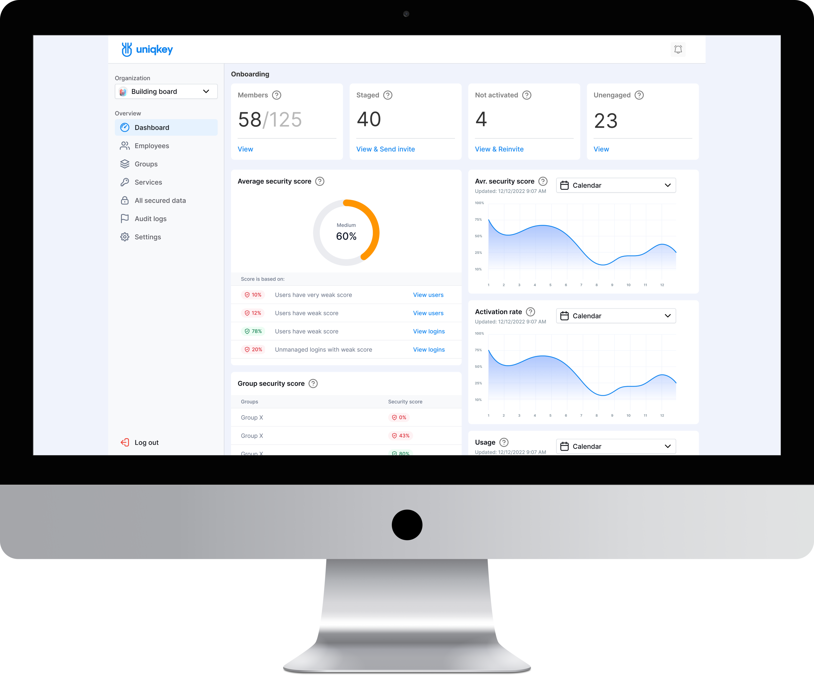
Impact:
26%
Satisfaction Score
95%
Found nav improved
85%
Security Score understood
27%
Support tickets
Product SCOPE
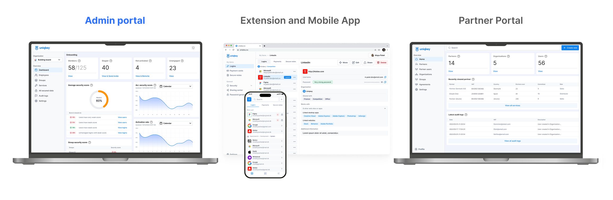
This case study centers on the Admin Portal, the core of
Uniqkey's management experience.
As Lead Designer, I worked across a global ecosystem of
platforms, ensuring consistency across all of them.
This is the story of
The challenge
Admins couldn't understand their organization's security posture without manual investigation across multiple disconnected screens.
Context — Uniqkey's Admin Panel was the product's most critical decision-making surface.
Enterprise IT admins — in governments, financial institutions, leading European corporations used it daily to manage organizational security.
The Average Security Score existed as a single number. No one understood where it came from, what affected it, or what to do about it.
That's what triggered the redesign.
First-gen
DASHBOARD
Before my redesign: the interface I inherited, not the one I designed.
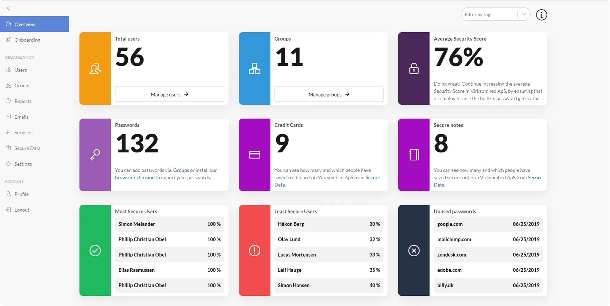
Different roles,
Compliance Officer
"I don't fully understand how to improve the Average Security score. The UI doesn't provide clear guidance on how to enhance these metrics."
Systems Administrator
"Relevant information is not always visible on the dashboard. More customization is needed to display data by company priorities and roles."
Operations Manager
"The dashboard widgets appear too bulky, making key information harder to perceive. Data configuration is also challenging, and setup takes longer than expected."
HR Manager
"The admin panel is quite complex, taking a lot of time to manage employees and service access. More intuitive settings would be appreciated."
Working closely with the Product Owner, and with strategic input from the Chief Product Officer, I built the information architecture and user flows from scratch, mapping how data moved between screens and how each layer contributed to the overall security picture. The logic was validated with the business team before moving to design.
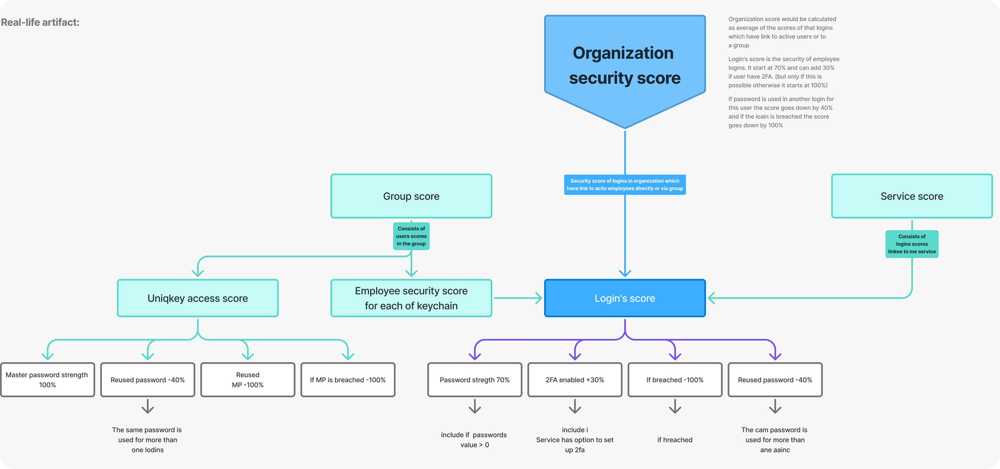
Redesigned
A main issue - just a single score number.
Admins either ignore it or are anxious about it.
Before: First Gen
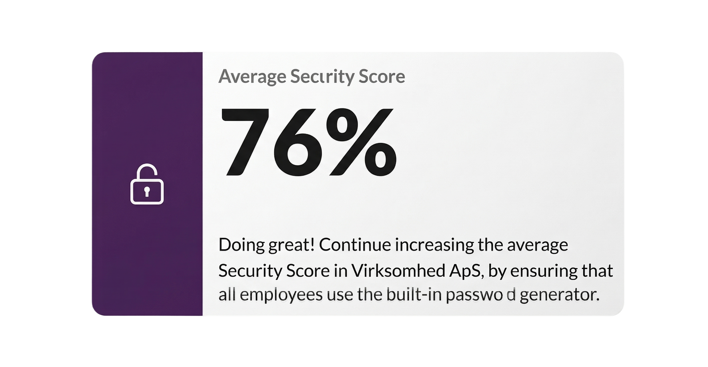
iteration: 1
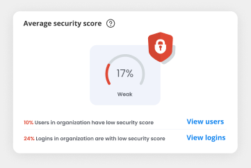
iteration: 2
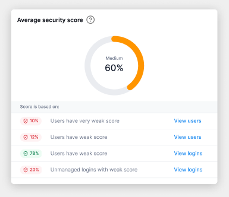
The Score is now
a connected indicator:
Organisation-level overview Shows current security health and trend direction. Employee breakdown Which team members affect the score and how navigable directly from the dashboard.
Data items breakdown Which passwords, cards, or secure notes create risk weak, reused, missing 2FA. Direct action paths from every insight to the relevant management screen one click.
The shift
The admin no longer asks "what does this number mean?".
They choose, "Which of these do I fix first?". That's the shift!
Redesigned 1/2
After, Iteration 1, The new dashboard is the entry point to
organizational security designed around one question:
"What does my organization's security look like right now and
what needs my attention?"
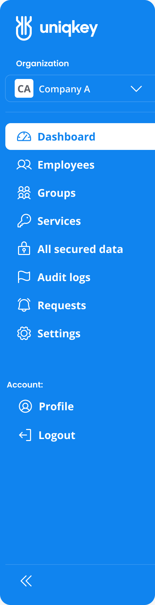
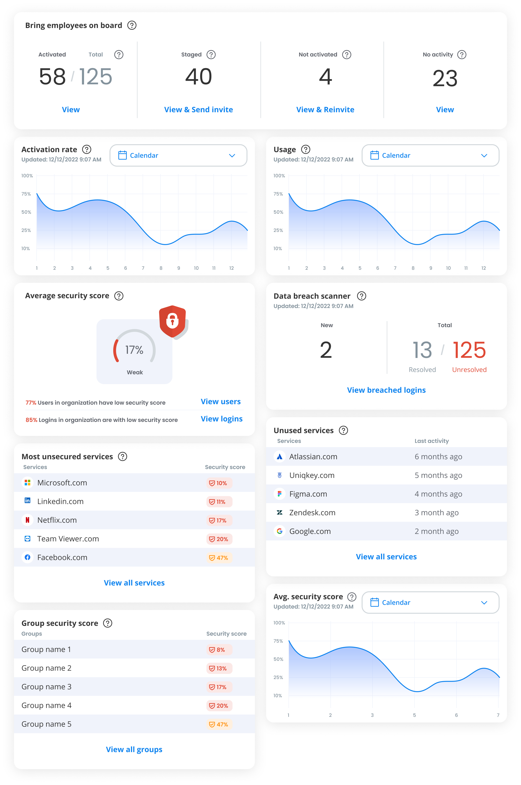
Security Score
Now explainable The score is no longer a black box. Admins see which factors drive it and can navigate directly to the source.
Navigation
Always oriented Admins always know where they are, what they're looking at, and how to get back. Previously, users got lost. Now the system guides them.
Information hierarchy
Decision-first Critical alerts surface immediately. Secondary data is accessible but doesn't compete for attention..
Redesigned 2/2
After, Iteration 2 (final), Navigation improved, but the visual system still felt overly consumer-oriented for enterprise buyers such as governments and financial institutions who expect a more formal, restrained aesthetic. Not a rebrand, but just a recalibration for the audience. That was the real impact: not cosmetics, but trust from a new audience.
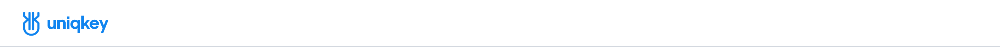
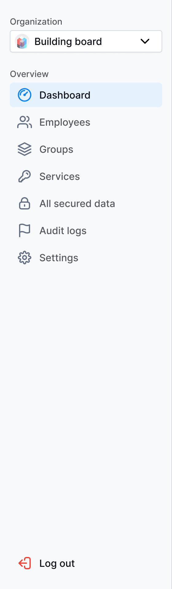
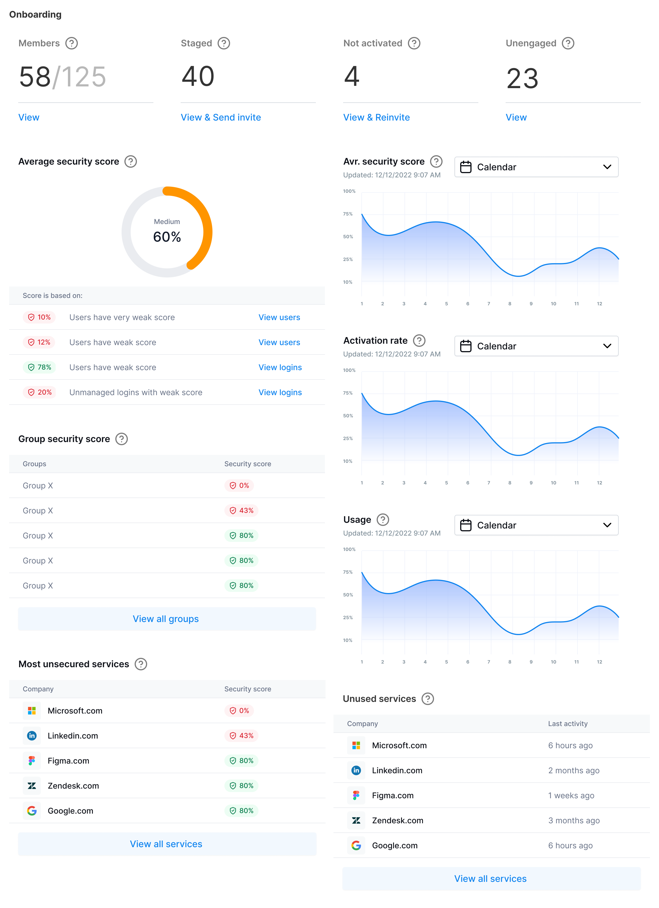
The Shift
Rounded elements, vibrant colors, and visual noise gave way to
sharp geometry,
a muted palette, refined typography, and less decoration.
Enterprise clients started calling the interface professional and trustworthy before reading a single data point.
Results
That shift became part of a bigger result: 35% annual revenue growth, alongside the work of sales, marketing, and the wider team. Design was one input, not the only one. The product moved beyond Scandinavia into new European markets and got featured at international cybersecurity summits. Not just a redesign. Trust, scale, recognition.
Admin Portal – Groups
A unified table view for monitoring security scores and activity across all groups. The toolbar enables quick management actions, and clicking any row opens a detailed view of that group.
Product Awards at the Time.
Design system
The Admin Portal was the foundation for everything that followed. As the system scaled across platforms, I turned the UI Kit into a token-based Design System, an investment that pays off on every future feature.
Foundation layer:
Component library:
Development integration:
Prototype: Dashboard prototype
Design System: Components, styles, and tokens
Open for complex challenges and leadership roles. Select time to call and Hire Me below.
Book a Call